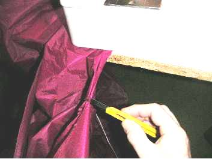
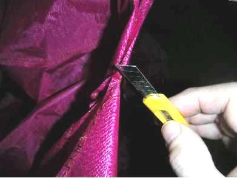
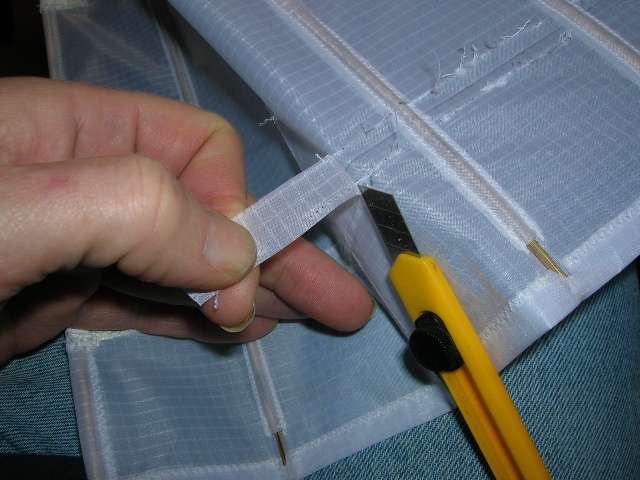

Il va falloir en découdre
La couture à la machine, c'est bien, ça tient, c'est pas trop dur à faire, sauf cas particulier. Mais quelquefois, on se trompe :
• Soit on n'a pas cousu où on pensait : par exemple on a pris un pli de tissu dans la couture sans s'en apercevoir, ce qui peut arriver sur des gros volumes pour lesquels le passage dans l'arceau de la machine nécessite de bourrer un peu.
• Soit après essai le cerf-volant ne va pas, esthétiquement ou techniquement.
Alors ? Alors, il faut en découdre !
Plusieurs méthodes sont utilisables. Elles dépendent en partie du point que vous avez utilisé pour coudre.
Méthode classique : elle utilise un "Découd-Vite" (marque déposée). On peut le manier de plusieurs façons : Avec une couture zigzag, le plus rapide est de passer la pointe entre les 2 lignes de points. Il ne faut quand même pas vouloir tout couper en continu, bien qu'on puisse y arriver avec un point large, peu tendu et bien accessible (rectiligne surtout). En général, on peut seulement couper 3 ou 4 points, et c'est déjà pas mal. Si on veut couper en continu, le risque est que la pointe de l'outil ne rentre dans le tissu et... on coupe le tissu au lieu du fil. Alors, il vaut mieux rester modeste. En mettant le tissu sur une surface un peu bombée (le doigt ou le genou sont particulièrement commodes à trouver, mais ne vous faites pas une injection de Découd-vite !) on peut facilement prendre 3 points et ressortir avant de pousser en sécurité.

Si la couture est au point droit, étroite ou serrée, on ne peut appliquer cette méthode. Introduire le Découd-Vite entre les 2 tissus et vouloir couper, comme l'ustensile semble avoir été prévu pour, amène en général à brève échéance une coupure du tissu. Il vaut mieux couper les points de l'extérieur un-à-un. En prendre un sur deux est en général suffisant. Un sur deux est bien adapté au point zigzag pour lequel, de cette manière, on n'a pas à tourner le tissu de 90° à chaque geste.
Méthode du cutter: Très rapide, mais un peu plus risquée, elle est utilisable pour tous les points. Elle est jouable si la couture n'est pas très serrée, et le point assez long.
On défait le début comme plus haut point par point pour ouvrir la couture, puis on coince un côté du tissu quelque part (par exemple sous la machine à coudre ou sous le pied-de-biche en piquant même l'aiguille), et on tire sur l'autre. La couture se distend alors suffisamment pour que les premiers points soient bien visibles. On les coupe alors avec un cutter ou un Opinel bien affûté.

Ceci est très rapide, car en général on coupe 2 ou 3 points à la fois et le fil coupé, en coulissant avec la traction, libère encore un ou deux points et prépare la coupe suivante. Bien tirer de nouveau sur le tissu après chaque coupe pour rendre accessibles à la coupe les points suivants.
Le risque ? C'est qu'en coupant un fil (qui est naturellement de la même couleur que le tissu si vous travaillez bien !) vous n'entailliez le tissu lui-même. Ceci fait une petite fente en V ce qui n'est jamais satisfaisant et peut être plus tard une amorce de faiblesse. Alors, agir avec doigté. Bien tirer sur le tissu entre 2 coupes pour rendre apparent les points suivants. Éviter un mouvement de scie avec la lame qui couperait le tissu dans la foulée quand le fil cédera. Si la lame coupe comme il faut, il suffit pratiquement de la poser sur le fil bien tendu pour le couper.

Quand vous avez décousu, reste à enlever les fils coupés, c'est le plus long... Vous pouvez "effacer" un peu les trous du spi en frottant dessus du bon côté un objet dur comme l'ongle ou l'autre bout du cutter...

La méthode du cutter est avantageuse quand vous voulez découdre 2 coutures parallèles. Vous pouvez procéder sur les 2 coutures alternativement pour conserver toujours un accès facile à l'endroit stratégique et y maintenir la tension...
Alors, bon courage, essayez toutes les méthodes, vous en avez peut-être d'autres, dîtes-le moi mais faites bien attention surtout en recousant...